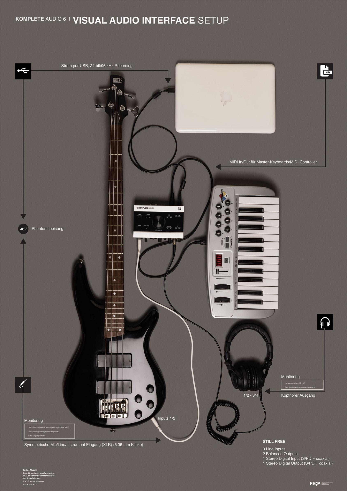
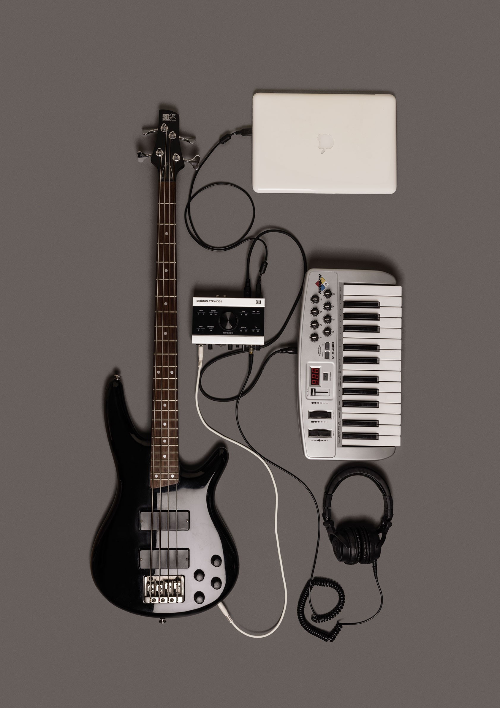

Visual Audio Interface Setup—an innovative information visualization designed specifically for home studios. Captured with precision using an SLR camera and illuminated with a softbox, the accompanying photos showcase a meticulous depiction of the technical requirements linking instruments to sound cards.
  Next project - App Design